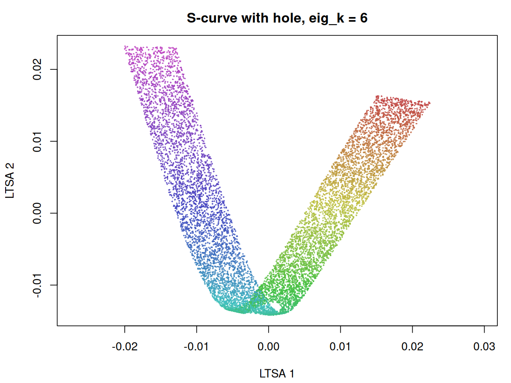
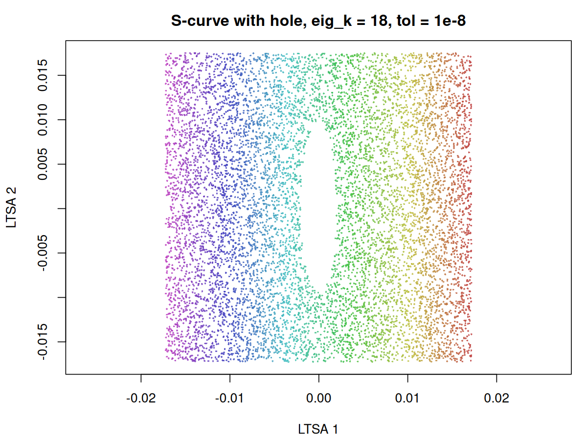

Numerical diagnostics and solver notes
Source:vignettes/articles/numerical-diagnostics.Rmd
numerical-diagnostics.RmdThis note collects the LTSA implementation details that are useful
when a result looks numerically suspicious, but too long for the README
or ?ltsa.
Threading
If you use multiple assembly threads with a multithreaded underlying linear
algebra library, avoid oversubscribing your machine: outer LTSA
assembly threads and inner BLAS threads can otherwise compete with each
other. I use MKL but need to set the following in my
~/.bashrc:
Eigenanalysis Steps
The ndim eigenvectors you want are the lowest
nonconstant eigenvectors of the LTSA matrix B, i.e. not the
eigenvector associated with the smallest eigenvalue, which is always
constant. In this respect, LTSA is similar to Laplacian eigenmaps or
diffusion maps.
However, finding the lowest nonconstant eigenvectors for a large
sparse matrix can be tricky. It’s easy to get into a scenario where
convergence fails, takes an excessive time, or worse hangs forever. To
ameliorate this, the flotsam implementation tries the
following steps:
Shifted largest-algebraic solves
The eigenvectors of a shifted matrix
()
are the same as the eigenvectors of the original matrix, but the
corresponding eigenvalues are shifted by
.
Finding the largest eigenvalues of a matrix tends to be easier than
finding the smallest eigenvalues, so this can make the eigensolver
converge faster. Many methods offer a “shift-invert” option to do this,
which will also spread out the eigenvalues if they are clustered close
to each other. Unfortunately, I’ve never had good luck with the
shift-invert approach when it comes to large sparse matrices, so instead
flotsam does a manual shift by doing a quick calculation to
find the largest eigenvalue (this doesn’t need to be exact, just a rough
estimate) and then shifting the matrix by that amount. This doesn’t fix
the clustered eigenvalue problem, but it does seem to help with
convergence in general.
This approach was motivated by practical issues around small clustered eigenvalues and by discussion between Aaron Lun, Kevin Doherty, and Yixuan Qiu in at https://github.com/yixuan/spectra/issues/126.
Over-requested eigenvectors
Instead of only requesting ndim output vectors, the
iterative methods (those provided by RSpectra and
irlba) request a wider candidate block controlled by
eig_k. This tends to help with successful convergence and
also helps with clustered eigenvalue problems, where an entire
eigenvector can be missed. I have seen this help in cases where
convergence failed, and simply increasing tol or
ncv and maxitr alone didn’t help: it seems
like increasing eig_k provided a larger space for the
eigenanalysis to work in.
The default eig_k is already quite generous for all the
datasets I have tried it with. In most cases, you could get away with
using a smaller value for eig_k and you would get the same
solution faster. Unfortunately, there is no way to know in the case of
clustered eigenvalues if you are actually getting all the eigenvectors
back and increasing eig_k was the only thing that I have
seen that worked. In practice, I have only seen this happen with
synthetic datasets.
Rayleigh-Ritz postprocessing
The Rayleigh-Ritz postprocessing step is a small polishing step that
attempts to improve the accuracy of the returned eigenvectors. It
removes the known constant null direction and then projects the
remaining eigenvectors onto the candidate span. It may help with mixed
or rotated vectors in the clustered low-eigenvalue case. It can’t
recover an entirely missing eigenvector, hence the use of
eig_k as mentioned above.
Comparison to scikit-learn LTSA
The Python implementation in scikit-learn (using LocallyLinearEmbedding)
with method="ltsa") will be faster on very large datasets
because it can use approximate nearest neighbor neighbors and will
usually converge with datasets where ARPACK (used by the scikit-learn
implementation) fails.
However, the clustered eigenvalue problem may be better handled with ARPACK.
A Clustered Eigenvalue Example
The example below shows a case where the RSpectra backend fails to
find all the eigenvectors. I will use the synthetic S-curve-with-a-hole
dataset from the snedata package:
Let’s see what happens where we run with only 6 eigenvectors:
ltsa_result <- ltsa(sch, eig_k = 6)
eig_k = 6The embedding is not a disaster, but it’s got a very obvious bend and you can’t see the hole (maybe the embedding is also twisted).
Increasing the tolerance might be seen as the obvious step:
res_strict <- ltsa(sch, eig_k = 6, tol = 1e-8)But this fails to converge:
Error: Eigenanalysis failed: RSpectra failed to converge enough LTSA candidate vectors: 0 / 6
In addition: Warning message:
In do.call(.Call, args = dot_call_args) :
only 0 eigenvalue(s) converged, less than k = 6Increasing the number of eigenvectors to 18 helps the convergence succeed:
res_strict <- ltsa(sch, eig_k = 18, tol = 1e-8)
|Now the embedding looks correct: properly unrolled and the hole is visible.
LTSA eigenanalysis and diagnostics
Examples below use a swiss roll dataset:
n <- 1000
max_z <- 10
# phi represents the position along the roll
phi <- stats::runif(n, min = 1.5 * pi, max = 4.5 * pi)
x <- phi * cos(phi)
y <- phi * sin(phi)
z <- stats::runif(n, max = max_z)
swiss_roll <- data.frame(x, y, z)Use output = "result" to inspect diagnostics:
ltsa_result <- ltsa(
swiss_roll,
eig_k = 16,
output = "result"
)
ltsa_result$eigen[c("status", "eig_k", "rank")]
ltsa_result$eigen$messagesA large number of other values are returned, but they probably aren’t
that useful except for isolating bugs in particular code paths. If the
eigen$messages complain about a weak Ritz boundary gap,
then there is a risk of missing eigenvectors in my experience. Stricter
convergence criteria can help here at the cost of longer
computation.
Convergence controls
For the default RSpectra backend, the main convergence controls are
tol, maxitr and ncv and are
passed directly to ltsa:
ltsa_strict <- ltsa(
swiss_roll,
eig_k = 16,
output = "result",
tol = 1e-8,
maxitr = 5000,
ncv = 40
)Backend-specific tuning is passed through ...:
-
eig_method = "rspectra":tol,maxitr, andncv. -
eig_method = "irlba":tol,maxit, andreorth. -
eig_method = "svdr":tolandit.
In the event of a convergence failure with stricter convergence, you
may also need to increase eig_k (the number of eigenvectors
returned before the Rayleigh-Ritz processing):
ltsa_wider <- ltsa(
swiss_roll,
eig_k = 32,
output = "result"
)However the default is already quite generous, so usually tighter
convergence is the answer with default eig_k.
Use output = "B" to return the assembled unnormalized
LTSA matrix without final eigenanalysis:
B <- ltsa(swiss_roll, output = "B")If you use eig_method = "irlba" or
eig_method = "svdr" then different functions in irlba will
be used instead of RSpectra. They do not expose the same convergence
metadata as RSpectra, so they rely on post-hoc residual diagnostics
rather than hard backend convergence counts. For small diagnostic cases,
eig_method = "eig" and eig_method = "eigen"
are synonyms for base eigen(). This is not affected by
clustering issues and will always return the correct eigenvectors, but
is very expensive and slow for all but the smallest datasets.
Set include_B = TRUE with output = "result"
if the detailed result should also carry the assembled unnormalized
matrix.